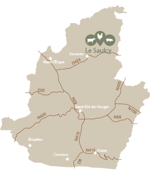

Eugénie et Pierre sont à la tête d’une ferme traditionnelle nichée à 500 m d’altitude, au cœur du massif déodatien. Le couple y élève vaches, porcs, poulets, pintades et dindes. La majeure partie de l’exploitation est consacrée aux vaches allaitantes limousines qui disposent de 90 hectares de prairies naturelles. Les volailles quant à elles profitent d’un parcours autour de la ferme. Au fil des années, la production s’est agrandie en 2003 avec la création d’une salle de découpe. Le 1er mai 2013, la ferme est devenue le Groupement Agricole d’Exploitation en Commun (GAEC) du Haut Pré. En 2014, une pièce de cuisson vient s’ajouter à l’exploitation, qui peut aujourd’hui gérer sa production, de l’élevage au produit fini.
Le Haut Pré
Quieux
88210 Le Saulcy
Tél : 06 22 69 47 05
Mail : eugeniegoulon@outlook.fr
Site : www.lafermeduhautpre.fr